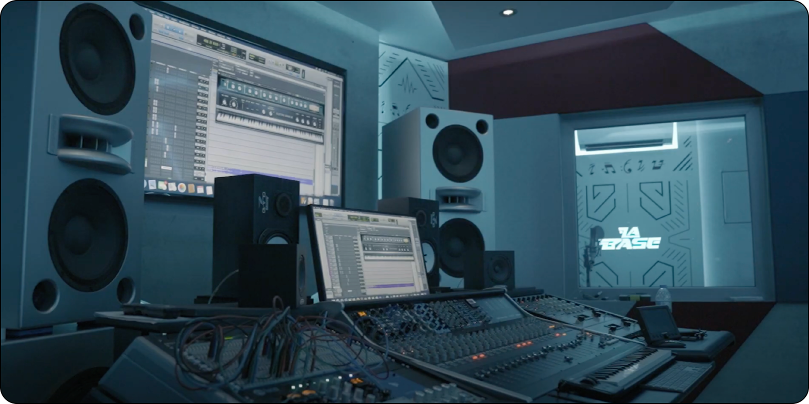
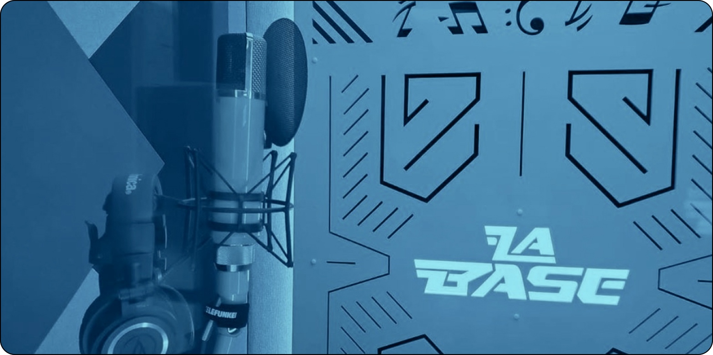
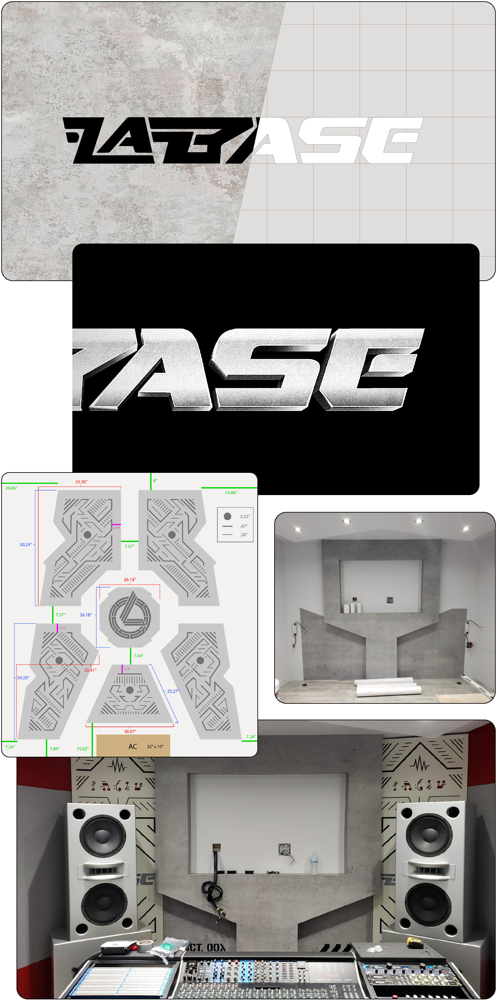

La Base is an innovative collective studio developed by Wisin (CEO of La Base) and Hyde el Quimico (Chief Engineer) that brings together talented artists, composers, producers, and music engineers specializing in the Latin music realm, particularly excelling in the reggaeton genre.
Wisin, in his solo career and as part of the Wisin & Yandel duo, has received over 50 awards and 200 nominations, including Grammys, Latin Grammys, Billboard, and Premios Lo Nuestro. His impact on the reggaeton scene and his contribution to Latin music, in general, have earned him a prominent place in the industry, recognized for his skills as a performer, composer, and producer.
Some of the artists who have collaborated in La Base facilities include Ozuna, Anuel, Myke Towers, Yandel, Chencho Corleones, Jhayco, Zion y Lennox, Tito el Bambino, among others.
Collaborating on the development of the musical studio La Base was an enriching project that covered various aspects of design and visual identity. From creating the logo to conceptualizing the visual environment, we immersed ourselves in representing the unique essence of this collective space inspired by a contemporary base.
We approached the structure and graphics of the studio with a meticulous focus, aiming to harmonize functionality with aesthetics. Every detail, from the walls to the ceiling facades, was designed to create an environment that inspired innovation and collaboration. The logo, as the centerpiece of the identity, features a modern stencil typography that seeks to encapsulate the vibrant creativity and musical diversity associated with La Base concept. We developed a seamless pattern with a concrete-like texture. The carefully selected texture on the walls not only added a unique visual touch but also contributed to the acoustics of the space, optimizing sound quality. Wallpapers became an artistic expression that fused the visual with the functional.
When designing bass traps, we delved into the science of sound, ensuring that each element contributed to the acoustic excellence of the studios. This precise approach allowed the creation of an environment conducive to high-quality music production.
In summary, every aspect of this collaboration focused on creating an environment that not only reflected technical excellence but also inspired creativity and innovation in every corner of La Base. This project became a unique synthesis of design and music, where each detail contributed to the creation of a vibrant and dynamic space for the musical community.
